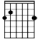
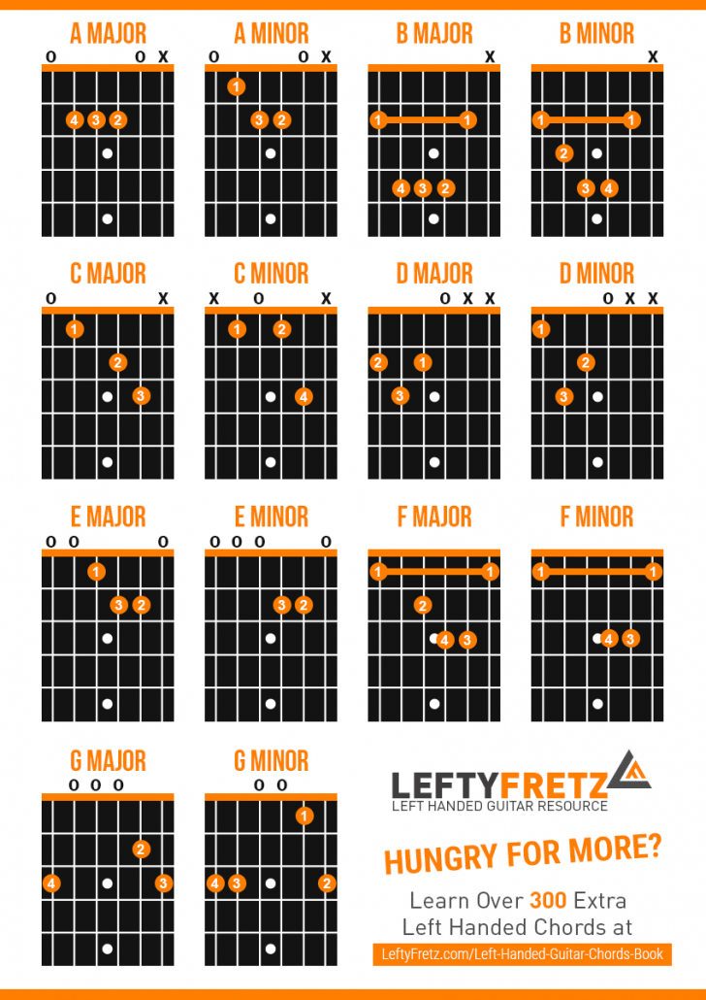

Adventure Time
Come As You Are
Everlong
In-A-Gadda-Da-Vida
Introdiction
Nothing Else Matters
Paint It Black intro
House Of The Rising Sun
Seven Nation Army
Stairway To Heaven
Smells Like Teen Spirit
Paste right-handed tabs here:
Introdiction by Scroobius Pip Intro Tab e|--------------------------| B|--------------------------| G|----9-----9------9-----9--| D|-7-----9-----10-----9-----| A|--------------------------| E|--------------------------|
Make left-handed!
Left-handed version